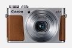

器材
党
全部器材
产品年表
名词百科
榜单
器材库
> 不可换镜头数码相机 > PowerShot G9 X

佳能
PowerShot G9 X
分类
不可换镜头数码相机
点评
0 条
图片
0 张
评测
3 篇
PowerShot G9 X兼具便携与高性能于一身，搭载了1.0\
产品类型
不可换镜头数码相机
综合评分
暂无评分
无忌评测
娇小的1英寸选手 佳能G9X测评
规格参数
网友点评
(0)
产品图 / 样片
(0)
评测文章
(3)
规格总览
发布日期
2015-10-13
影像规格
影像传感器
CMOS
影像传感器尺寸
13.2×8.8mm
总像素
约2090万
有效像素
约2020万
影像处理器
DIGIC 6
静态图像尺寸
大：5472×3648 中1：4320×2880 中2：2304×1536 小：720×480 RAW：5472×3648
静态图像格式
JPEG, RAW
短片尺寸
1920×1080 1280×720 640×480
短片格式
MPEG4-AVC/H.264 , MP4
镜头和对焦
焦距
10.2mm-30.6mm
等效35mm画幅焦距
28mm-84mm
最大光圈
f/2.0-4.9
光学变焦
3倍
最近对焦距离
广角5cm, 长焦35cm, 微距5cm
对焦模式
单点自动对焦/ 智能面部优先+追踪
手动对焦
支持
曝光控制
快门速度
30-1/2000秒，B门（最长曝光时间256秒）
ISO感光度
自动， ISO 125-ISO 12800 以1/3级增减
白平衡
自动/日光/阴影/阴天/白炽灯/荧光灯/荧光灯H/闪光灯/用户自定义1/用户自定义2
连拍
约6.0张/秒（单次自动对焦）
拍摄模式
自动 / P程序 / Tv快门优先 / Av光圈优先 / M手动 / C用户自定义 / 混合式自动 / 创意拍摄 / SCN特殊场景 / 短片
取景规格
LCD尺寸
3.0英寸
LCD像素
约104万
文件输入/输出
存储卡
SD/SDHC, SDXC
数据接口
USB2.0
视频/音频接口
HDMI 输出
无线功能
Wi-Fi, NFC
支持打印协议
PictBridge
电源
电池
可充电锂离子电池
外观
颜色
银色, 黑色
尺寸
98.0×57.9×30.8mm
重量
约185g
其它
附件
电池充电器CB-2LHT，锂离子充电电池NB-13L，腕带，使用说明书光盘
该产品暂无存档的网友点评
该产品暂无存档的产品图
评测 / 相关文章
娇小的1英寸选手 佳能G9X测评
（存档）
［试用］佳能G9X实拍样张
（存档）
［资讯］G族新成员 佳能发布G5 X及G9 X数码相机
（存档）
相关文章
［试用］娇小的1英寸选手 佳能G9X测评
（存档）
［试用］佳能G9X实拍样张
（存档）
［资讯］G族新成员 佳能发布G5 X及G9 X数码相机
（存档）